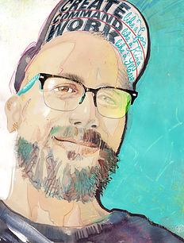
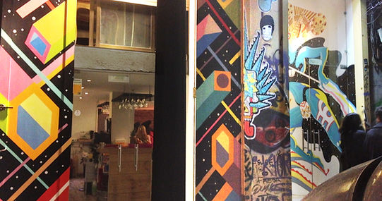
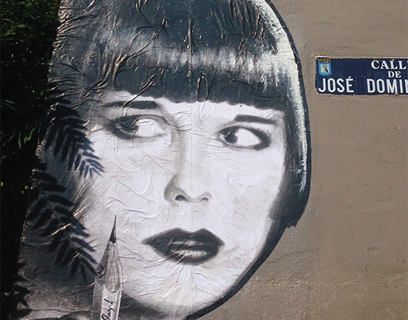

Papaboule: cuando lo efímero se convierte en lenguaje
Alejandro Colao ha construido una obra que cruza diseño, ilustración y espacio público para pensar el arte desde el cambio
Papaboule, alter ego artístico de Alejandro Colao, desarrolla una práctica que une formación en Bellas Artes, experiencia en diseño e ilustración y una investigación sostenida sobre el paste-up y la intervención urbana. Este artículo recorre su trayectoria, su mirada sobre lo efímero y por qué su obra destaca dentro del arte contemporáneo.

En el arte contemporáneo, no siempre destaca quien más ruido hace. A veces sobresale quien encuentra una forma propia de mirar, intervenir y decir. Papaboule, nombre artístico de Alejandro Colao, pertenece a esa categoría de artistas cuya obra no se limita a un soporte ni a una disciplina: se mueve entre el diseño, la ilustración, el muralismo y la intervención urbana con una lógica coherente y una voz reconocible.
Su trayectoria no nace de la improvisación. Parte de una formación sólida en Bellas Artes por la Universidad Complutense de Madrid, continúa con años de trabajo en diseño gráfico editorial y dirección de arte, y se amplía durante su etapa en Londres, donde estudia en Central Saint Martins. Ese recorrido explica por qué su trabajo combina oficio visual, pensamiento conceptual y una relación especialmente viva con el espacio público.
Una trayectoria que conecta disciplinas
Antes de consolidar su identidad como Papaboule, Alejandro Colao ya había desarrollado una carrera profesional en el ámbito de la imagen. El paso por el diseño editorial y la ilustración no fue un desvío, sino una base. En su obra actual se percibe esa precisión formal, esa capacidad de síntesis y esa atención al impacto visual inmediato que suele venir del trabajo con encargos reales, audiencias concretas y lenguajes gráficos exigentes.
Su perfil, además, evita el encasillamiento. A lo largo de los años ha alternado ilustración profesional, brand design, docencia y trabajos de concept art y storyboard para cine y televisión. Esa amplitud no diluye su propuesta; al contrario, la vuelve más rica.
| Campo | Aportación a su obra |
|---|---|
| Bellas Artes | Base técnica y conceptual |
| Diseño editorial | Claridad visual y dirección de arte |
| Ilustración | Capacidad narrativa e identidad gráfica |
| Muralismo y paste-up | Relación directa con el espacio público |
| Filosofía | Profundización en su discurso sobre lo efímero |
El espacio público como lugar de sentido
Uno de los aspectos más interesantes de Papaboule es su trabajo en paste-up, stickers e intervenciones urbanas. No se trata solo de sacar imágenes a la calle. Su planteamiento convierte la ciudad en soporte, contexto y conversación.
Lejos de entender el arte urbano como simple gesto decorativo, Papaboule lo aborda como una práctica con carga conceptual. En su texto de presentación, vincula el carácter efímero del paste-up con ideas como el "Amor Fati" y el eterno retorno: una forma de asumir el cambio, la desaparición y la transformación como parte esencial de la obra, no como un fracaso de su permanencia.
En Papaboule, lo efímero no resta valor a la obra: le da sentido.
Esa idea resulta especialmente potente hoy. En un contexto cultural obsesionado con archivar, conservar y fijar, su trabajo recuerda que también hay verdad en lo que aparece, afecta y luego desaparece.
De la calle al encargo: una práctica que dialoga con ambos mundos
Papaboule ha colaborado con marcas e instituciones de gran proyección, entre ellas Ferrari, Puma, Movistar, Rolling Stone y la FAO de la ONU. Ese dato no solo habla de reconocimiento profesional; también demuestra que su lenguaje visual puede operar en contextos muy distintos sin perder identidad.
No todos los artistas logran sostener ese equilibrio. En muchos casos, el trabajo comercial y la investigación artística avanzan por carriles separados. En Papaboule, en cambio, parece haber un diálogo productivo entre ambos mundos:
- la precisión del diseño fortalece la obra visual,
- la libertad del trabajo personal evita la rigidez del encargo,
- y la experiencia profesional aporta una versatilidad poco común.
Una obra en evolución constante
Desde 2020, además, Colao cursa estudios universitarios en Filosofía, una decisión que encaja de forma natural con el rumbo de su producción. No es un dato accesorio: ayuda a entender por qué su discurso artístico no se queda en la superficie estética. Hay una voluntad de pensar el arte, sus condiciones de aparición y su relación con el tiempo.
Ese cruce entre práctica y reflexión sitúa a Papaboule en un lugar especialmente interesante. Su trabajo no se presenta como una fórmula cerrada, sino como una investigación abierta. Y ahí reside gran parte de su fuerza.
Por qué conviene seguirle la pista
Hablar de Papaboule no es hablar de una promesa vacía, sino de un artista con recorrido, criterio y una identidad construida a lo largo del tiempo. Su trayectoria demuestra:
- formación sólida,
- experiencia profesional sostenida,
- lenguaje visual propio,
- y una visión conceptual cada vez más definida.
En un panorama saturado de imágenes rápidas y discursos prefabricados, Papaboule aporta algo más difícil de encontrar: una obra con intención.
Conclusión
Papaboule ha convertido la mezcla de disciplinas en una forma de pensamiento visual. Entre el diseño, la ilustración y la intervención urbana, su trabajo propone una mirada donde el cambio no se combate, sino que se incorpora como parte del hecho artístico.
Seguir su trayectoria tiene sentido por una razón simple: cuando un artista consigue que técnica, experiencia y visión empiecen a hablar el mismo idioma, suele estar construyendo algo duradero, incluso cuando trabaja con materiales y soportes destinados a desaparecer.
Fuentes
- Sitio oficial de Papaboule
- Universidad Complutense de Madrid, programa de actividades 2019
How did this post make you feel?
Pick one reaction:

